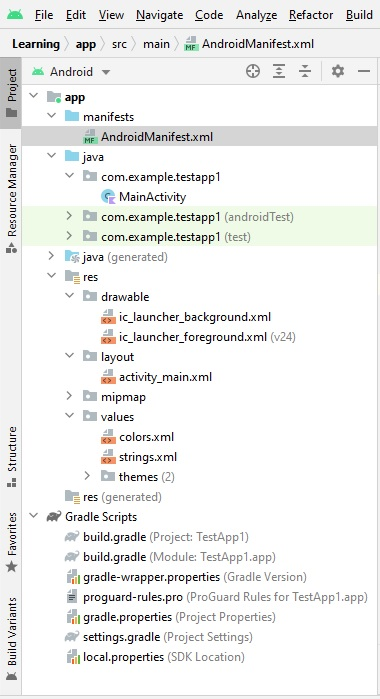

SDKs
Files
AndroidManifest.xml
<?xml version="1.0" encoding="utf-8"?>
<manifest xmlns:android="http://schemas.android.com/apk/res/android" package="com.example.testapp1">
<application
android:allowBackup="true"
android:icon="@mipmap/ic_launcher"
android:label="@string/app_name"
android:roundIcon="@mipmap/ic_launcher_round"
android:supportsRtl="true"
android:theme="@style/Theme.TestApp1">
<activity
android:name=".MainActivity"
android:exported="true">
<intent-filter>
<action android:name="android.intent.action.MAIN" />
<category android:name="android.intent.category.LAUNCHER" />
</intent-filter>
</activity>
</application>
</manifest>
build.gradle(app)
plugins {
id 'com.android.application'
id 'kotlin-android'
}
android {
compileSdk 31
defaultConfig {
applicationId "com.example.testapp1"
minSdk 21
targetSdk 31
versionCode 1
versionName "1.0"
testInstrumentationRunner "androidx.test.runner.AndroidJUnitRunner"
}
buildTypes {
release {
minifyEnabled false
proguardFiles getDefaultProguardFile('proguard-android-optimize.txt'), 'proguard-rules.pro'
}
}
compileOptions {
sourceCompatibility JavaVersion.VERSION_1_8
targetCompatibility JavaVersion.VERSION_1_8
}
kotlinOptions {
jvmTarget = '1.8'
}
}
dependencies {
implementation 'androidx.core:core-ktx:1.7.0'
implementation 'androidx.appcompat:appcompat:1.4.0'
implementation 'com.google.android.material:material:1.4.0'
implementation 'androidx.constraintlayout:constraintlayout:2.1.2'
testImplementation 'junit:junit:4.+'
androidTestImplementation 'androidx.test.ext:junit:1.1.3'
androidTestImplementation 'androidx.test.espresso:espresso-core:3.4.0'
}
build.gradle (test1)
// Top-level build file where you can add configuration options common to all sub-projects/modules.
buildscript {
repositories {
google()
mavenCentral()
}
dependencies {
classpath "com.android.tools.build:gradle:7.0.4"
classpath "org.jetbrains.kotlin:kotlin-gradle-plugin:1.6.10"
// NOTE: Do not place your application dependencies here; they belong
// in the individual module build.gradle files
}
}
task clean(type: Delete) {
delete rootProject.buildDir
}
settings.gradle
dependencyResolutionManagement {
repositoriesMode.set(RepositoriesMode.FAIL_ON_PROJECT_REPOS)
repositories {
google()
mavenCentral()
jcenter() // Warning: this repository is going to shut down soon
}
}
rootProject.name = "TestApp1"
include ':app'
colors.xml
<?xml version="1.0" encoding="utf-8"?>
<resources>
<color name="purple_200">#FFBB86FC</color>
<color name="purple_500">#FF6200EE</color>
<color name="purple_700">#FF3700B3</color>
<color name="teal_200">#FF03DAC5</color>
<color name="teal_700">#FF018786</color>
<color name="black">#FF000000</color>
<color name="white">#FFFFFFFF</color>
</resources>
strings.xml
<resources>
<string name="app_name">TestApp1</string>
</resources>
activity_main.xml
<?xml version="1.0" encoding="utf-8"?>
<androidx.constraintlayout.widget.ConstraintLayout xmlns:android="http://schemas.android.com/apk/res/android"
xmlns:app="http://schemas.android.com/apk/res-auto"
xmlns:tools="http://schemas.android.com/tools"
android:layout_width="match_parent"
android:layout_height="match_parent"
tools:context=".MainActivity">
<TextView
android:layout_width="wrap_content"
android:layout_height="wrap_content"
android:text="Hello World!"
app:layout_constraintBottom_toBottomOf="parent"
app:layout_constraintLeft_toLeftOf="parent"
app:layout_constraintRight_toRightOf="parent"
app:layout_constraintTop_toTopOf="parent" />
</androidx.constraintlayout.widget.ConstraintLayout>
MainActivity.kt
package com.example.testapp1
import androidx.appcompat.app.AppCompatActivity
import android.os.Bundle
class MainActivity : AppCompatActivity() {
override fun onCreate(savedInstanceState: Bundle?) {
super.onCreate(savedInstanceState)
setContentView(R.layout.activity_main)
}
}